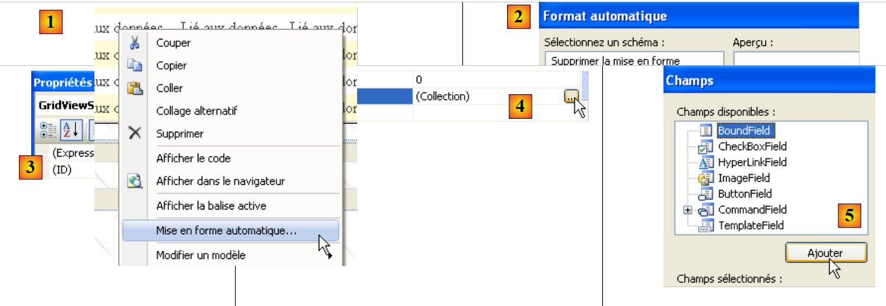
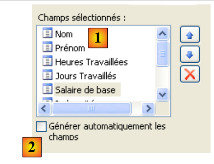
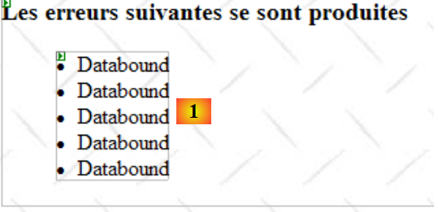
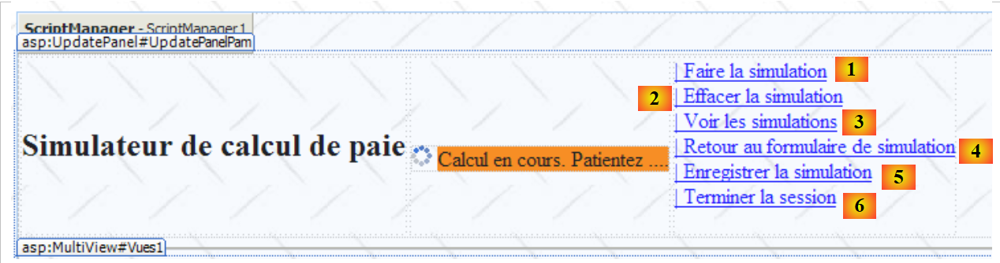
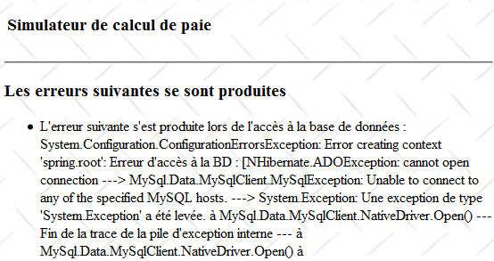
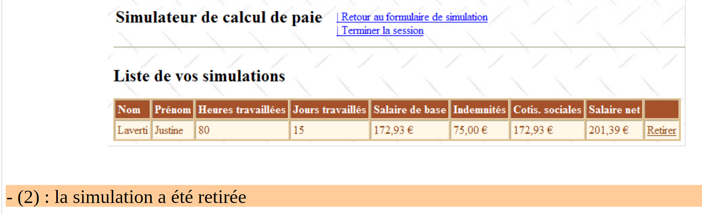

8. A aplicação [SimuPaie] – versão 4 – ASP.NET / multi-view / página única
Leitura recomendada: referência [1], Desenvolvimento Web com ASP.NET 1.1, secções:
-
Componentes de servidor e controladores de aplicação
-
Exemplos de aplicações MVC com componentes de servidor ASP
Vamos agora examinar uma versão derivada da aplicação ASP.NET de três camadas discutida anteriormente, que adiciona novas funcionalidades. A arquitetura da nossa aplicação evolui da seguinte forma:
 |
O processamento de um pedido do cliente decorre da seguinte forma:
- O cliente faz uma solicitação à aplicação.
- A aplicação processa esta solicitação. Para tal, pode necessitar da assistência da camada [business], que, por sua vez, pode necessitar da camada [DAO] caso seja necessário trocar dados com a base de dados. A aplicação recebe uma resposta da camada [business].
- Com base nessa resposta, seleciona (3) a vista (= a resposta) a enviar ao cliente, fornecendo-lhe (4) as informações (o modelo) de que necessita.
- A resposta é enviada ao cliente (5)
Esta é uma arquitetura web conhecida como MVC (Modelo–Visão–Controlador):
- [Aplicação] é o controlador. Este trata de todos os pedidos do cliente.
- [Entradas, Simulação, Simulações, ...] são as vistas. Uma vista no .NET é código ASP/HTML padrão que contém componentes que precisam de ser inicializados. Os valores que devem ser fornecidos a estes componentes formam o modelo da vista.
Aqui, vamos implementar o padrão de design MVC da seguinte forma:
- as vistas serão componentes [View] dentro de uma única página [Default.aspx]
- o controlador é, então, o código [Default.aspx.cs] para esta página única.
Apenas aplicações básicas podem suportar esta implementação MVC. Na verdade, a cada pedido, todos os componentes da página [Default.aspx] são instanciados, ou seja, todas as vistas. Ao enviar a resposta, uma delas é selecionada pelo código de controlo da aplicação simplesmente tornando visível o componente [View] correspondente e ocultando os outros. Se a aplicação tiver muitas vistas, a página [Default.aspx] terá muitos componentes, e o custo de os instanciar pode tornar-se proibitivo. Além disso, o modo [Design] da página pode tornar-se incontrolável devido ao excesso de vistas. Este tipo de arquitetura é adequado para aplicações com poucas vistas e desenvolvidas por uma única pessoa. Quando pode ser adotada, permite o desenvolvimento de uma arquitetura MVC de forma muito simples. É isso que iremos explorar nesta nova versão.
8.1. As vistas da aplicação
As diferentes vistas apresentadas ao utilizador serão as seguintes:
- a vista [VueSaisies], que exibe o formulário de simulação

- a vista [VueSimulation], utilizada para apresentar os resultados detalhados da simulação:

- a vista [VueSimulations], que lista as simulações realizadas pelo cliente

- a [EmptySimulationsView], que indica que o cliente não tem simulações ou já não tem mais simulações:

- a vista [ErrorView], que indica um ou mais erros:

8.2. O projeto do Visual Web Developer para a camada [web]
O projeto do Visual Web Developer para a camada [web] é o seguinte:
 |
- em [1] encontramos:
- o ficheiro de configuração da aplicação [Web.config] – é idêntico ao da aplicação anterior.
- o ficheiro [Global.cs] que gere os eventos da aplicação web, neste caso o seu arranque – é idêntico ao da aplicação anterior, exceto que também gere o arranque da sessão do utilizador.
- o formulário [Default.aspx] da aplicação – contém as várias vistas da aplicação.
- Em [2] encontram-se as referências do projeto – são idênticas às da versão anterior
8.3. O ficheiro [Global.cs]
O ficheiro [Global.cs], que gere os eventos da aplicação web, é idêntico ao da aplicação anterior, exceto que também gere o início da sessão do utilizador:
Global.cs
using System;
using System.Web;
using Pam.Dao.Entites;
using Pam.Metier.Service;
using Spring.Context.Support;
using System.Collections.Generic;
using istia.st.pam.web;
namespace pam_v4
{
public class Global : HttpApplication
{
// --- static application data ---
public static Employe[] Employes;
public static string Msg = string.Empty;
public static bool Erreur = false;
public static IPamMetier PamMetier = null;
// application startup
public void Application_Start(object sender, EventArgs e)
{
...
}
// start user session
public void Session_Start(object sender, EventArgs e)
{
// put an empty simulation list in the session
Session["simulations"] = new List<Simulation>();
}
}
}
- Linhas 27–34: Tratamos do início da sessão. Colocaremos a lista de simulações realizadas pelo utilizador nesta sessão.
- linha 30: É criada uma lista vazia de simulações. Uma simulação é um objeto do tipo [Simulation], que descreveremos em detalhe em breve.
- linha 31: a lista de simulações é colocada na sessão associada à chave «simulations»
8.4. A classe [Simulation]
Um objeto do tipo [Simulation] é utilizado para encapsular uma linha da tabela de simulações:
O seu código é o seguinte:
namespace Pam.Web
{
public class Simulation
{
// simulation data
public string Nom { get; set; }
public string Prenom { get; set; }
public double HeuresTravaillees { get; set; }
public int JoursTravailles { get; set; }
public double SalaireBase { get; set; }
public double Indemnites { get; set; }
public double CotisationsSociales { get; set; }
public double SalaireNet { get; set; }
// manufacturers
public Simulation()
{
}
public Simulation(string nom, string prenom, double heuresTravailllees, int joursTravailles, double salaireBase, double indemnites, double cotisationsSociales, double salaireNet)
{
{
this.Nom = nom;
this.Prenom = prenom;
this.HeuresTravaillees = heuresTravailllees;
this.JoursTravailles = joursTravailles;
this.SalaireBase = salaireBase;
this.Indemnites = indemnites;
this.CotisationsSociales = cotisationsSociales;
this.SalaireNet = salaireNet;
}
}
}
}
Os campos da classe correspondem às colunas da tabela de simulação.
8.5. A página [Default.aspx]
8.5.1. Visão geral
A página [Default.aspx] contém vários componentes [View], um para cada vista. A sua estrutura é a seguinte:
<%@ Page Language="C#" AutoEventWireup="true" CodeFile="Default.aspx.cs" Inherits="pam_v4.PagePam" %>
<!DOCTYPE html PUBLIC "-//W3C//DTD XHTML 1.0 Transitional//EN" "http://www.w3.org/TR/xhtml1/DTD/xhtml1-transitional.dtd">
<html xmlns="http://www.w3.org/1999/xhtml">
<head id="Head1" runat="server">
<title>Simulateur de paie</title>
</head>
<body background="ressources/standard.jpg">
<form id="form1" runat="server">
<asp:ScriptManager ID="ScriptManager1" runat="server" EnablePartialRendering="true" />
<asp:UpdatePanel runat="server" ID="UpdatePanelPam" UpdateMode="Conditional">
<ContentTemplate>
<table>
<tr>
<td>
<h2>
Simulateur de calcul de paie</h2>
</td>
<td>
<label>
 </label>
<asp:UpdateProgress ID="UpdateProgress1" runat="server">
<ProgressTemplate>
<img src="images/indicator.gif" />
<asp:Label ID="Label5" runat="server" BackColor="#FF8000"
EnableViewState="False" Text="Calcul en cours. Patientez ....">
</asp:Label>
</ProgressTemplate>
</asp:UpdateProgress>
</td>
<td>
<asp:LinkButton ID="LinkButtonFaireSimulation" runat="server"
CausesValidation="False" OnClick="LinkButtonFaireSimulation_Click">
| Faire la simulation<br /></asp:LinkButton>
<asp:LinkButton ID="LinkButtonEffacerSimulation" runat="server"
CausesValidation="False" OnClick="LinkButtonEffacerSimulation_Click">
| Effacer la simulation<br /></asp:LinkButton>
<asp:LinkButton ID="LinkButtonVoirSimulations" runat="server"
CausesValidation="False" OnClick="LinkButtonVoirSimulations_Click">
| Voir les simulations<br /></asp:LinkButton>
<asp:LinkButton ID="LinkButtonFormulaireSimulation" runat="server"
CausesValidation="False" OnClick="LinkButtonFormulaireSimulation_Click">
| Retour au formulaire de simulation<br /></asp:LinkButton>
<asp:LinkButton ID="LinkButtonEnregistrerSimulation" runat="server"
CausesValidation="False" OnClick="LinkButtonEnregistrerSimulation_Click">
| Enregistrer la simulation<br /></asp:LinkButton>
<asp:LinkButton ID="LinkButtonTerminerSession" runat="server"
CausesValidation="False" OnClick="LinkButtonTerminerSession_Click">
| Terminer la session<br /></asp:LinkButton>
</td>
</table>
<hr />
<asp:MultiView ID="Vues1" ActiveViewIndex="0" runat="server">
<asp:View ID="VueSaisies" runat="server">
...
</asp:View>
</asp:MultiView>
<asp:MultiView ID="Vues2" runat="server">
<asp:View ID="VueSimulation" runat="server">
...
</asp:View>
<asp:View ID="VueSimulations" runat="server">
...
</asp:View>
<asp:View ID="VueSimulationsVides" runat="server">
...
</asp:View>
<asp:View ID="VueErreurs" runat="server">
...
</asp:View>
</asp:MultiView>
</ContentTemplate>
</asp:UpdatePanel>
</form>
</body>
</html>
- Linha 10: a tag para ativar extensões Ajax
- linhas 11–73: o contentor UpdatePanel atualizado por chamadas Ajax
- linhas 12–72: o conteúdo do UpdatePanel
- linhas 13–52: o cabeçalho que aparecerá em todas as visualizações. Apresenta ao utilizador uma lista de ações possíveis sob a forma de uma lista de links.
- linha 33: Observe o atributo CausesValidation="False", que garante que os validadores da página não serão executados implicitamente quando o link for clicado. Quando este atributo é omitido, o seu valor padrão é True. A validação da página pode ser realizada explicitamente no código do lado do servidor utilizando a operação Page.Validate.
- Linhas 53–57: Um componente [MultiView] com uma única vista [VueSaisies]. Por este motivo, o número da vista a apresentar foi codificado na linha 53: ActiveViewIndex="0"
- Linhas 53–67: um componente [MultiView] com quatro vistas: a vista [VueSimulation] (linhas 59–61), a vista [VueSimulations] (linhas 62–64), a vista [VueSimulationsVides] (linhas 65–67) e a vista [VueErreurs] (linhas 68–70). Um componente [MultiView] apresenta apenas uma vista de cada vez. Para apresentar a vista #i do componente Vues2, escreva o seguinte código:
8.5.2. O cabeçalho en
O cabeçalho é composto pelos seguintes componentes:
 |
N.º | Tipo | Nome | Função |
LinkButton | LinkButtonRunSimulation | solicita o cálculo da simulação | |
LinkButton | LinkButtonClearSimulation | limpa o formulário de entrada | |
LinkButton | LinkButtonViewSimulations | exibe a lista de simulações já realizadas | |
LinkButton | LinkButtonSimulationForm | retorna ao formulário de entrada | |
LinkButton | LinkButtonSaveSimulation | guarda a simulação atual na lista de simulações | |
LinkButton | LinkButtonEndSession | encerra a sessão atual |
8.5.3. A vista [ Saisies]
O componente [View] denominado [VueSaisies] é o seguinte:
 |
N.º | Tipo | Nome | Função |
Lista suspensa | EmployeeComboBox | Contém a lista de nomes dos funcionários | |
Caixa de Texto | Caixa de TextoHoras | Número de horas trabalhadas – número real | |
Caixa de Texto | TextBoxDays | Número de dias trabalhados – inteiro | |
Validador de campo obrigatório | Validador de campo obrigatórioHoras | verifica se o campo [2] [TextBoxHours] não está vazio | |
Validador de Expressão Regular | RegularExpressionValidatorHours | verifica se o campo [2] [TextBoxHours] é um número real >=0 | |
Validador de Campo Obrigatório | Validador de Campo Obrigatório para Dias | verifica se o campo [3] [TextBoxDays] não está vazio | |
Validador de Expressão Regular | RegularExpressionValidatorDays | verifica se o campo [3] [TextBoxDays] é um número inteiro >=0 |
8.5.4. A vista [Simula e ativada]
O componente [View] denominado [SimulationView] é o seguinte:

Consiste exclusivamente em componentes [Label] cujos IDs estão listados acima.
8.5.5. A vista [Simu lations]
O componente [View] denominado [SimulationView] é o seguinte:
 |
N.º | Tipo | Nome | Função |
GridView | GridViewSimulações | Contém a lista de simulações |
As propriedades do componente [GridViewSimulations] foram definidas da seguinte forma:
 |
- em [1]: clique com o botão direito do rato na opção [GridView] / [AutoFormat]
- em [2]: escolha um tipo de exibição para o [GridView]
 |
- em [3]: selecione as propriedades do [GridView]
- em [4]: edite as colunas do [GridView]
- em [5]: adicione uma coluna [BoundField] que será vinculada a uma das propriedades públicas do objeto a ser exibido na linha do [GridView]. O objeto exibido aqui será um objeto [Simulation].
 |
- em [6]: introduza o título da coluna
- em [7]: especifique o nome da propriedade da classe [Simulation] que será associada a esta coluna.
- [DataFormatString] especifica como os valores apresentados na coluna devem ser formatados.
As colunas do componente [GridViewSimulations] têm as seguintes propriedades:
N.º | Características |
Tipo: Campo vinculado, Texto do cabeçalho: Nome, Campo de dados: Nome | |
Tipo: Campo Vinculado, Texto do Cabeçalho: Apelido, Campo de Dados: Apelido | |
Tipo: Campo Vinculado, Texto do Cabeçalho: Horas Trabalhadas, Campo de Dados: HorasTrabalhadas | |
Tipo: Campo Vinculado, Texto do Cabeçalho: Dias Trabalhados, Campo de Dados: DiasTrabalhados | |
Tipo: Campo Vinculado, Texto do Cabeçalho: Salário Base, Campo de Dados: SalárioBase, Formato de Dados: {0:C} (formato de moeda, C=Moeda) – exibirá o símbolo do euro. | |
Tipo: Campo Vinculado, Texto do Cabeçalho: Subsídios, Campo de Dados: Indemnites, Formato de Dados: {0:C} | |
Tipo: Campo Vinculado, Texto do Cabeçalho: Contribuições para a Segurança Social, Campo de Dados: Contribuições para a Segurança Social, Formato de Dados: {0:C} | |
Tipo: Campo Vinculado, Texto do Cabeçalho: Salário Líquido, Campo de Dados: SalárioLíquido, Formato de Dados: {0:C} |
Note que o [DataField] deve corresponder a uma propriedade existente da classe [Simulation]. No final desta fase, todas as colunas do tipo [BoundField] foram criadas:
 |
- em [1]: as colunas criadas para o [GridView]
- em [2]: a geração automática de colunas deve ser desativada quando o programador as define manualmente, como acabámos de fazer.
Ainda precisamos de criar a coluna do link [Remover]:

 |
- em [1]: adicione uma coluna do tipo [CommandField / Delete]
- em [2]: ButtonType=Link para ter um link na coluna em vez de um botão
- em [3]: CausesValidation=False; clicar no link não acionará quaisquer verificações de validação que possam estar presentes na página. De facto, a eliminação de uma simulação não requer qualquer validação de dados.
- em [4]: apenas o link de eliminação ficará visível.
- em [5]: o texto deste link
8.5.6. A vista [Simulation sVides]
O componente [View] denominado [VueSimulationsVides] contém simplesmente texto:
8.5.7. A vista [E rros]
O componente [View] denominado [VueErreurs] é o seguinte:
 |
N.º | Tipo | Nome | Função |
Repetidor | RptErrors | exibe uma lista de mensagens de erro |
O componente [Repetidor] permite repetir código ASP.NET/HTML para cada objeto numa fonte de dados, normalmente uma coleção. Este código é definido diretamente no código-fonte ASP.NET da página:
<asp:Repeater ID="RptErreurs" runat="server">
<ItemTemplate>
<li>
<%# Container.DataItem %>
</li>
</ItemTemplate>
</asp:Repeater>
- Linha 2: <ItemTemplate> define o código que será repetido para cada item na fonte de dados.
- Linha 4: exibe o valor da expressão Container.DataItem, que se refere ao elemento atual na fonte de dados. Uma vez que este elemento é um objeto, o método ToString desse objeto é utilizado para o incluir na saída HTML da página. A nossa coleção de objetos será uma coleção List(Of String) contendo mensagens de erro. As linhas 3–5 incluirão sequências <li>Message</li> na saída HTML da página.
8.6. O controlador [Default.aspx.cs]
8.6.1. Visão geral
Voltemos à arquitetura MVC da aplicação:
 |
- [Default.aspx.cs], que é o código da página única [Default.aspx], é o controlador da aplicação.
- [Global] é o objeto [HttpApplication] que inicializa a aplicação e possui uma referência à camada [business].
A estrutura do código do controlador [Default.aspx.cs] é a seguinte:
using System.Collections.Generic;
...
public partial class PagePam : Page
{
private void setVues(bool boolVues1, bool boolVues2, int index)
{
// display the requested views
// boolVues1 : true if Vues1 multi-view is to be visible
// boolVues1 : true if the Vues2 multiview is to be visible
// index: index of the Vues2 view to be displayed
...
}
private void setMenu(bool boolFaireSimulation, bool boolEnregistrerSimulation, bool boolEffacerSimulation, bool boolFormulaireSimulation, bool boolVoirSimulations, bool boolTerminerSession)
{
// set menu options
// each Boolean is assigned to the Visible property of the corresponding link
...
}
// page loading
protected void Page_Load(object sender, System.EventArgs e)
{
// initial request processing
if (!IsPostBack)
{
...
}
}
protected void LinkButtonFaireSimulation_Click(object sender, System.EventArgs e)
{
...
}
protected void LinkButtonEffacerSimulation_Click(object sender, System.EventArgs e)
{
....
}
protected void LinkButtonVoirSimulations_Click(object sender, System.EventArgs e)
{
...
}
protected void LinkButtonEnregistrerSimulation_Click(object sender, System.EventArgs e)
{
...
}
protected void LinkButtonTerminerSession_Click(object sender, System.EventArgs e)
{
...
}
protected void LinkButtonFormulaireSimulation_Click(object sender, System.EventArgs e)
{
...
}
protected void GridViewSimulations_RowDeleting(object sender, GridViewDeleteEventArgs e)
{
...
}
}
Em resposta ao pedido inicial do utilizador (GET), apenas o evento Load nas linhas 24–31 é tratado. Para pedidos subsequentes (POST) efetuados através dos links do menu, são tratados dois eventos:
- o evento Load (linhas 24–31), mas a verificação booleana de Page.IsPostback (linha 27) garante que nada aconteça.
- o evento associado ao link que foi clicado:
 |
- linhas 33–36: processar o clique no link [1]
- linhas 38–41: processar o clique no link [2]
- linhas 43-46: processar o clique no link [3]
- linhas 58–61: processar o clique no link [4]
- linhas 48–51: processar o clique no link [5]
- linhas 53-56: processar o clique no link [6]
Para extrair sequências de código que se repetem frequentemente, foram criados dois métodos internos:
- setVues, linhas 7–14: define a(s) vista(s) a exibir
- setMenu, linhas 16–21: define as opções do menu a exibir
8.6.2. O evento Load
Leitura recomendada: Referência [1], Desenvolvimento Web com ASP.NET 1.1:
- a secção sobre o componente [Repeater] e a ligação de dados.
A primeira vista apresentada ao utilizador é a do formulário vazio:

A inicialização da aplicação requer acesso a uma fonte de dados, o que pode falhar. Neste caso, a primeira página apresentada é uma página de erro:

O evento [Load] é tratado de forma semelhante às versões anteriores do ASP.NET:
// page loading
protected void Page_Load(object sender, System.EventArgs e)
{
// initial request processing
if (!IsPostBack)
{
// initialization errors?
if (Global.Erreur)
{
// display view [errors]
...
// menu positioning
...
return;
}
// loading employee names into the combo
...
// menu positioning
...
// view display [input]
...
}
}
Pergunta: Complete o código acima
8.6.3. Ação: Executar a simulação
A seguir, o ecrã (1) representa o pedido do utilizador e o ecrã (2) representa a resposta enviada ao utilizador pela aplicação web. A partir do ecrã inicial, o utilizador pode iniciar uma simulação:


 |
O procedimento que lida com esta ação pode ser semelhante ao seguinte:
protected void LinkButtonFaireSimulation_Click(object sender, System.EventArgs e)
{
// wage calculation
// valid page?
Page.Validate();
if (!Page.IsValid)
{
// view display [input]
...
return;
}
// the page is validated - inputs are retrieved
double HeuresTravaillées = ...;
int JoursTravaillés = ...;
// we calculate the employee's salary
FeuilleSalaire feuillesalaire;
try
{
feuillesalaire = ...
}
catch (PamException ex)
{
// display view [errors]
...
return;
}
// put the result in the session
Session["simulation"] = ...
// displaying results
...
// display views [entry, employee, salary]
...
// menu display
...
}
Pergunta: Complete o código acima
8.6.4. Ação: Guardar a simulação
Assim que a simulação estiver concluída, o utilizador pode solicitar o seu armazenamento:
 |

O procedimento que lida com esta ação pode ser semelhante ao seguinte:
protected void LinkButtonEnregistrerSimulation_Click(object sender, System.EventArgs e)
{
// save the current simulation in the list of simulations in the session
...
// the [simulations] view is displayed
...
}
Pergunta: Complete o código acima
8.6.5. Ação: Voltar ao formulário de simulação
Leitura recomendada: referência [1], [Desenvolvimento Web com ASP.NET 1.1]: o papel do campo oculto _VIEWSTATE
Assim que a lista de simulações for exibida, o utilizador pode solicitar o regresso ao formulário de simulação:
 |
Note que o ecrã (2) apresenta o formulário tal como foi preenchido. É importante lembrar que estas diferentes vistas pertencem à mesma página. Entre os pedidos, os valores dos controlos são preservados pelo mecanismo ViewState, caso a propriedade EnableViewState desses controlos esteja definida como true.
O procedimento que lida com esta ação pode ser semelhante ao seguinte:
protected void LinkButtonFormulaireSimulation_Click(object sender, System.EventArgs e)
{
// view display [input]
...
// menu positioning
...
}
Pergunta: Complete o código acima
8.6.6. Ação: Limpar a simulação
De volta ao formulário de simulação, o utilizador pode solicitar a limpeza das entradas atuais:
 |
O procedimento que lida com esta ação pode ser semelhante ao seguinte:
protected void LinkButtonEffacerSimulation_Click(object sender, System.EventArgs e)
{
// RAZ of the form
...
}
Pergunta: Complete o código acima
8.6.7. Ação: Ver simulações
O utilizador pode solicitar a visualização das simulações que já criou:
 |
 |
O procedimento que lida com esta ação pode ser semelhante ao seguinte:
protected void LinkButtonVoirSimulations_Click(object sender, System.EventArgs e)
{
// simulations are retrieved from the
...
// are there any simulations?
if (...)
{
// view [simulations] visible
...
}
else
{
// view [SimulationsVides]
...
}
// set the menu
...
}
Pergunta: Complete o código acima
8.6.8. Ação: Eliminar uma simulação
O utilizador pode solicitar a eliminação de uma simulação:
 |
 |
O procedimento [GridViewSimulations_RowDeleting] que lida com esta ação pode ter o seguinte aspeto:
protected void GridViewSimulations_RowDeleting(object sender, GridViewDeleteEventArgs e)
{
// simulations are retrieved from the
...
// delete the designated simulation (e.RowIndex is the number of the deleted line)
...
// are there any simulations left?
if (...)
{
// fill in the GridView
...
}
else
{
// view [SimulationsVides]
...
}
}
Pergunta: Complete o código acima
8.6.9. Ação: Terminar sessão
O utilizador pode solicitar o encerramento da sua sessão de simulação. Isto descarta o conteúdo da sessão e apresenta um formulário vazio:
 |
 |
O procedimento que lida com esta ação pode ser semelhante ao seguinte:
protected void LinkButtonTerminerSession_Click(object sender, System.EventArgs e)
{
// quit session
...
// display [entries] view
...
// menu positioning
...
}
Pergunta: Complete o código acima
Exercício prático: Implemente a aplicação web anterior no seu computador. Adicione-lhe a funcionalidade Ajax.